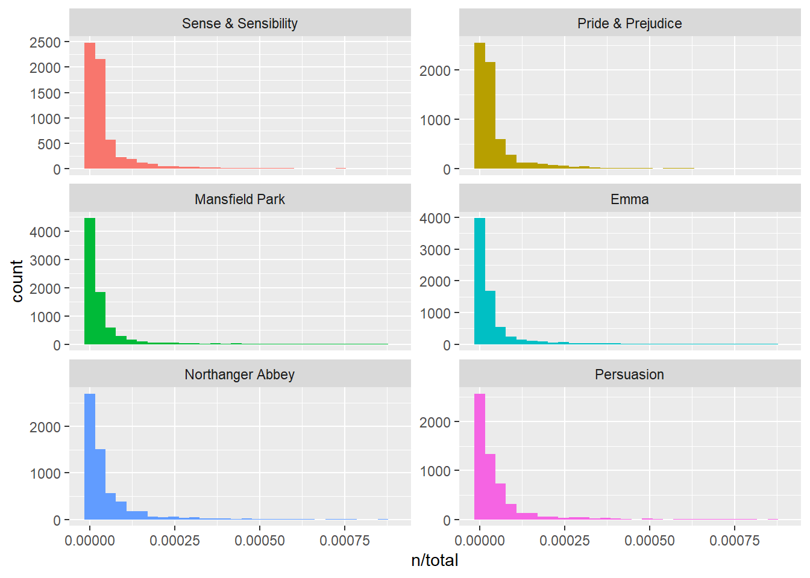
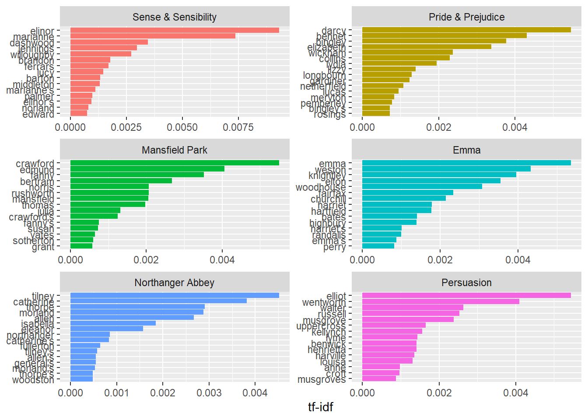

Chapter 7 Word and document frequency (TF-IDF)
One major question in text mining and natural langiage procesing is to quantify what a document is about using the words it contains. In addition to measuring “term frequency” metric (tf), we can look at the term’s inverse document frequency (idf). The idf decreases the weight for commonly used words and increases the weight for words that are not used very much in a collection of documents. This metric can be combined with the term frequency to claculate a term’s tf-idf: the frequency of a term adjusted for how rarely is is used.
\(idf(term) = ln (\frac{n_{documents}}{n_{documents containing term}})\)
7.1 Term frequency application
Let’s count the term frequency in Jane Austen’s novels
library(dplyr)
library(janeaustenr)
library(tidytext)
# count term frequency in each book
book_words = austen_books() %>%
unnest_tokens(word, text) %>%
count(book, word, sort = TRUE)
# count number of terms in each book
total_words = book_words %>%
group_by(book) %>%
summarize(total = sum(n))
#join both
book_words = left_join(book_words, total_words)## Joining, by = "book"## # A tibble: 40,379 x 4
## book word n total
## <fct> <chr> <int> <int>
## 1 Mansfield Park the 6206 160460
## 2 Mansfield Park to 5475 160460
## 3 Mansfield Park and 5438 160460
## 4 Emma to 5239 160996
## 5 Emma the 5201 160996
## 6 Emma and 4896 160996
## 7 Mansfield Park of 4778 160460
## 8 Pride & Prejudice the 4331 122204
## 9 Emma of 4291 160996
## 10 Pride & Prejudice to 4162 122204
## # ... with 40,369 more rowsThe resulting table contains one word/book by row: n is the number of times the word is used in a specific book and total is the toal words in the book. Let’s look at the distribution of n/total for each novel. It represents the number of times a word appears iin a novel diveded by the ttal number of terms: the term frequency.
library(ggplot2)
ggplot(data = book_words, aes(n/total, fill = book)) +
geom_histogram(show.legend = FALSE) +
xlim(NA, 0.0009) +
facet_wrap(~book, ncol = 2, scales = "free_y")## `stat_bin()` using `bins = 30`. Pick better value with `binwidth`.## Warning: Removed 896 rows containing non-finite values (stat_bin).## Warning: Removed 6 rows containing missing values (geom_bar).
7.2 Zipf’s law
The distribution shon in the previous figure is typical in known as Zipf’s law. It represents the relationships between the frequency of a word and its rank. Zipf’s law states that the frequency that a word appears is inversly proportional to its rank.
We can test this hypothesis with Jane Auste’s novels:
freq_by_rank = book_words %>%
group_by(book) %>%
mutate(rank = row_number(),
`term frequency` = n/total)
freq_by_rank## # A tibble: 40,379 x 6
## # Groups: book [6]
## book word n total rank `term frequency`
## <fct> <chr> <int> <int> <int> <dbl>
## 1 Mansfield Park the 6206 160460 1 0.0387
## 2 Mansfield Park to 5475 160460 2 0.0341
## 3 Mansfield Park and 5438 160460 3 0.0339
## 4 Emma to 5239 160996 1 0.0325
## 5 Emma the 5201 160996 2 0.0323
## 6 Emma and 4896 160996 3 0.0304
## 7 Mansfield Park of 4778 160460 4 0.0298
## 8 Pride & Prejudice the 4331 122204 1 0.0354
## 9 Emma of 4291 160996 4 0.0267
## 10 Pride & Prejudice to 4162 122204 2 0.0341
## # ... with 40,369 more rowsIn the ibtained dataframe, the rank column represents the rank of rach word within the frequency table (ordered by n). We can visualize the zipf’s law by plotting the rank in the x-axis and term frequency on the y-axis
, on logarithmic scales.
freq_by_rank %>%
ggplot(aes(rank, `term frequency`, color = book)) +
geom_line(size = 1.1, alpha = 0.8, show.legend = FALSE) +
scale_x_log10() +
scale_y_log10()
7.3 TF_IDF metric
TF-IDF (Term frequency-inverse document frequency) is a method for evaluating how important a ord is to a document in a collection or corpus. It consists of decreasing the weight for commonly used words and increasing the weight for words that are not used very much in a corpus of documents.
\(w_{term,document} = tf_{term,document} log(\frac{total number of documents}{number of documents containing the term})\)
Here is an example of measuring Tf-IDF using the bind_tf_idf function
## # A tibble: 40,379 x 7
## book word n total tf idf tf_idf
## <fct> <chr> <int> <int> <dbl> <dbl> <dbl>
## 1 Mansfield Park the 6206 160460 0.0387 0 0
## 2 Mansfield Park to 5475 160460 0.0341 0 0
## 3 Mansfield Park and 5438 160460 0.0339 0 0
## 4 Emma to 5239 160996 0.0325 0 0
## 5 Emma the 5201 160996 0.0323 0 0
## 6 Emma and 4896 160996 0.0304 0 0
## 7 Mansfield Park of 4778 160460 0.0298 0 0
## 8 Pride & Prejudice the 4331 122204 0.0354 0 0
## 9 Emma of 4291 160996 0.0267 0 0
## 10 Pride & Prejudice to 4162 122204 0.0341 0 0
## # ... with 40,369 more rowsWe notice that idf and tf-idf scores of commmon words are equivalent to zero since this aproach decreases the weight for common words. The inverse document frequency will be a higher number for words that occur in fewer of the documents in the collection. Let’s look at terms with high tf-idf in Jane Austen’s works
## # A tibble: 40,379 x 6
## book word n tf idf tf_idf
## <fct> <chr> <int> <dbl> <dbl> <dbl>
## 1 Sense & Sensibility elinor 623 0.00519 1.79 0.00931
## 2 Sense & Sensibility marianne 492 0.00410 1.79 0.00735
## 3 Mansfield Park crawford 493 0.00307 1.79 0.00551
## 4 Pride & Prejudice darcy 373 0.00305 1.79 0.00547
## 5 Persuasion elliot 254 0.00304 1.79 0.00544
## 6 Emma emma 786 0.00488 1.10 0.00536
## 7 Northanger Abbey tilney 196 0.00252 1.79 0.00452
## 8 Emma weston 389 0.00242 1.79 0.00433
## 9 Pride & Prejudice bennet 294 0.00241 1.79 0.00431
## 10 Persuasion wentworth 191 0.00228 1.79 0.00409
## # ... with 40,369 more rowsHere we see all proper nouns, names that are in fact important in these novels. None of them occur in all of novels, and they are important, characteristic words for each text within the corpus of Jane Austen’s novels.
Let’s plot the results:
book_words %>%
arrange(desc(tf_idf)) %>%
mutate(word = factor(word, levels = rev(unique(word)))) %>%
group_by(book) %>%
top_n(15) %>%
ungroup() %>%
ggplot(aes(word, tf_idf, fill = book)) +
geom_col(show.legend = FALSE) +
labs(x = NULL, y = "tf-idf") +
facet_wrap(~book, ncol = 2, scales = "free") +
coord_flip()## Selecting by tf_idf